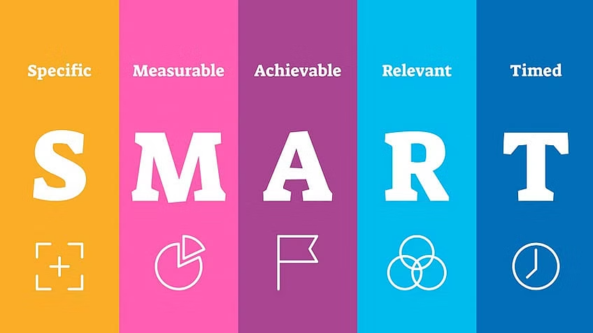

A few weeks ago I was sitting in a leadership brainstorming session and we were discussing how to better realize organizational goals. Upon reflection and discussion, the group identified a gap in objective clarity. Teams were drifting off course, and many of their objectives were vague and unclear. Conversely, objectives were most successful when they were concise, straightforward, and clear. Teams could really rally behind those causes. While this was nothing new to the team, it highlighted the need for an important course correction. Without clear direction the teams were following their own interpretations of plans, and it was easy to go astray.
Clarity is an important component to team and organizational performance, and there are other important aspects we should consider as well. In this post we will review and reflect on what makes strategic objectives effective for succesfful teams.
So how do we get started with crafting clear objectives? There are a lot of approaches out there and one deceptively simple framework for setting effective objectives is the SMART objective system. SMART stands for specific, measurable, achievable, relevant, and time-bound. Articulating these five key components can make teams much more likely to achieve their objectives, but what do each of these five aspects actually mean?
“Specific” means that a goal should be concrete and tangible. I often like to think about it as something I can point to. For example, I was once going though the usual corporate exercise of setting yearly objectives, and one of my initial plans was to “launch a research program” in an area we wanted to expand internally. It was going to take a lot of work and it was important that I got it off the ground that year. But given that objective, how was I actually going to know when the program was launched? There is always more to be done with these kinds of programs, so how do I know when I’m done? To make the objective specific, I edited that objective to “release a memo announcing the official launch of the program”. This allowed me to point to a piece of paper that announced a clear delineation as to when the launch was done, and when the post-launch work would begin.

An overview of the SMART objective criteria. Source
“Measurable” is similar to specific. This means that our objective should have a quantifiable aspect of success. For example, I was once on a team whose objective started as “we want to focus our project portfolio and consolidate some of the ongoing projects”. We made that objective measurable (and specific) by articulating our objective as “reducing the number of individual projects by 10%”, which resulted in team members being able to focus their work and avoid buring out.
“Achievable” means that the objective should be possible and reasonable to the team. It’s easy to say “we want this program launched in three months” but does the team agree it’s possible? Sometimes it’s helpful to work backwards from that deadline and assess what needs to be done and how it is resourced. Impossible goals can be vague and demoralizing for a team, so make sure the objectives are realistic.
“Relevant” objectives are similar to achievable objectives, but instead of asking whether success is possible, we would ask whether success matters. I see this often in teams that try to solve problems by moving quickly to “solutions” instead of spending time clearly defining and understanding the “problem to be solved”. We should be asking ourselves whether our objective actually solves the problem, and whether that problem is even important to solve. We can ask ourselves whether the objective aligns to our broader strategy, or whether it’s a distraction. As we have discussed in the past, it’s important that teams have a purpose, and relevance plays an important part in that.
“Time-bound” might be the most straightforward of the SMART criteria, but it’s also easy to forget. When do we want this objective to be completed? And importantly, what milestones should we be hitting to give us confidence that we are on track for success? Of course this brings up thoughts of Gantt charts on Power Point slides, and while we don’t need to follow that standard timeline graphing approach, we should at least be defining when we want our objectives completed.
By connecting these interdependent SMART criteria, we can craft powerful objectives that empower teams to work together and accomplish their goals. These objectives can often seem obvious, intuitive, or elementary, but they can also be very easy to forget and that can lead to teams drifting off course quickly. Of course this framework also fits into other systems as well (such as the agile epic, story, issue systems we touched on in a past post), and the interoperability of these frameworks is another strength because it further increases the tools at a team and leader’s disposal. While SMART objectives are a powerful place to start, it’s equally important to continue learning about other approaches that we can put together as a strong leadership “toolkit” that we can use.
comments powered by Disqus